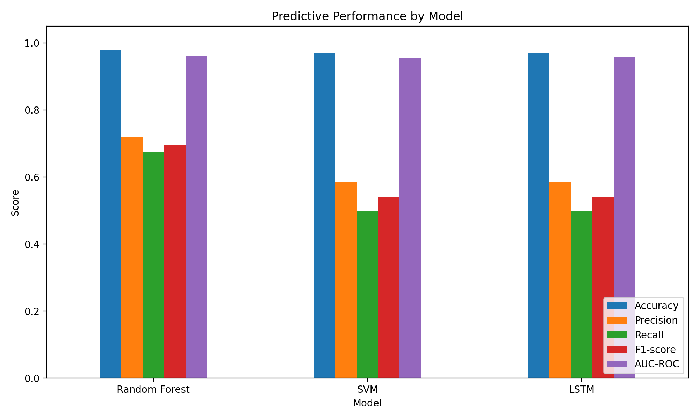
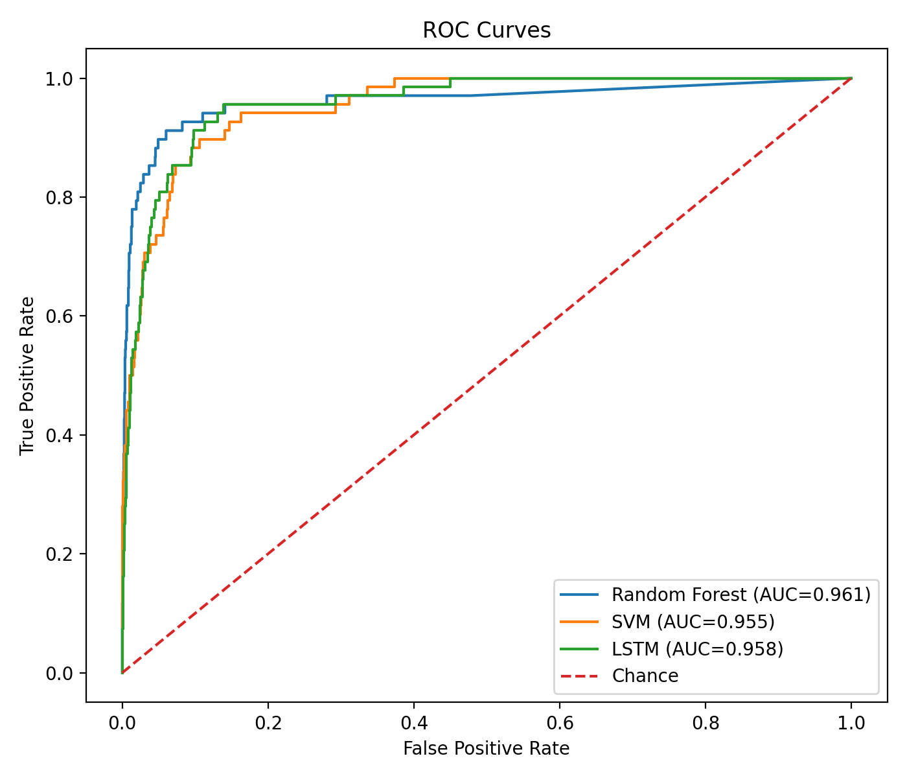

AI4I 2020 Predictive Maintenance Dashboard
Comparison of Random Forest, Support Vector Machine and an exploratory one-step LSTM.
✓ Input data passed validation.
Overview
Dataset
Predictions
Model comparison
Explainability
Efficiency
Limitations
Predictive performance
| Model | Accuracy | Precision | Recall | F1-score | AUC-ROC |
|---|---|---|---|---|---|
| Random Forest | 0.9800 | 0.7188 | 0.6765 | 0.6970 | 0.9614 |
| SVM | 0.9710 | 0.5862 | 0.5000 | 0.5397 | 0.9550 |
| LSTM | 0.9710 | 0.5862 | 0.5000 | 0.5397 | 0.9581 |


Prototype interface preview based on the implemented Streamlit dashboard layout.